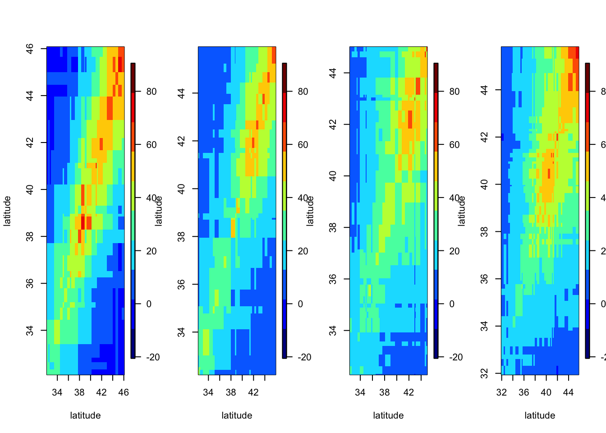

Chapter 3 Spatio-Temporal Statistical Models
library("dplyr")
library("fields")
library("ggplot2")
library("gstat")
library("RColorBrewer")
library("sp")
library("spacetime")
library("STRbook")
library("FRK")
library("ape")
library("broom")
library("leaps")Goals for spatio-temporal modeling can be summarised as below.
- predicting a plausible value of a response variable at some location in space within the time span of the observations and reporting the uncertainty of that prediction;
- performing scientific inference about the importance of covariates on the response variable in the presence of spatio-temporal dependence; and
- forecasting the future value of the response variable at some location, along with the uncertainty of that forecast.
Bearing these golas in mind, before diving into the spatio temporal modeling methodology in chapter 4 and 5, in this chapter, we will focus on the goal of spatio-temporal modeling described above. Speficially, we will see some basic models that do not fully satisfy above three goals, which requres needs for some flexible, complex methodology for spatio-temporal statistics.
3.1 Spatio-Temporal Prediction
3.1.1 Deterministic Prediction
The simples prediction is deterministic prediction, which simply averages the data by giving more weight to the near data, which is called inverse distance weighting (IDW).That is, for the data point with location index \(s_0\) and time index \(t_0\), the prediction value would be
\[\begin{equation} \hat{Z}(s_0 ; t_0) = \sum \sum w_{ij}(s_0;t_0)Z(s_{ij}; t_j) \end{equation}\]
where \[\begin{equation} w_{ij}(s_0;t_0) \equiv \dfrac{\tilde{w}_{ij}(s_0;t_0)}{\sum \sum \tilde{w}_{lk}(s_0;t_0)} \\ \tilde{w}_{ij}(s_0; t_0) \equiv \dfrac1{d((s_{ij};t_j),(s_0;t_0))^\alpha} \tag{1} \end{equation}\] Here, \(\alpha\) controls the smoothness of distance, where bigger \(\alpha\) giving more weight to far data. Common way to decide \(\alpha\) is throgh cross validation. That is, seeing the variability of criteria such as MSE, \(\alpha\) is chosen which have the minimum value. IDW in (1) is a type of spatio-temporal kernel predictior, which can be generally written as
\[\begin{equation} \tilde{w}_{ij}(s_0; t_0) = k((s_{ij}; t_j), (s_0;t_0); \theta) \end{equation}\]
So, we can use other kernel such as gaussian kernel.
data("NOAA_df_1990", package = "STRbook")
Tmax <- filter(NOAA_df_1990, # subset the data
proc == "Tmax" & # only max temperature
month == 7 & # July
year == 1993) # year of 1993
## ------------------------------------------------------------------------
pred_grid <- expand.grid(lon = seq(-100, -80, length = 20),
lat = seq(32, 46, length = 20),
day = seq(4, 29, length = 6))
## ------------------------------------------------------------------------
Tmax_no_14 <- filter(Tmax, !(day == 14)) # remove day 14
Tmax_July_idw <- idw(formula = z ~ 1, # dep. variable
locations = ~ lon + lat + day, # inputs
data = Tmax_no_14, # data set
newdata = pred_grid, # prediction grid
idp = 5) # inv. dist. pow.## [inverse distance weighted interpolation]## julian year month day id z proc lat lon date
## 1 728111 1993 7 1 3804 82 Tmax 39.35 -81.43333 1993-07-01
## 2 728112 1993 7 2 3804 84 Tmax 39.35 -81.43333 1993-07-02
## 3 728113 1993 7 3 3804 88 Tmax 39.35 -81.43333 1993-07-03
## 4 728114 1993 7 4 3804 90 Tmax 39.35 -81.43333 1993-07-04
## 5 728115 1993 7 5 3804 92 Tmax 39.35 -81.43333 1993-07-05
## 6 728116 1993 7 6 3804 91 Tmax 39.35 -81.43333 1993-07-06## ------------------------------------------------------------------------
ggplot(Tmax_July_idw) +
geom_tile(aes(x = lon, y = lat,
fill = var1.pred)) +
fill_scale(name = "degF") + # attach color scale
xlab("Longitude (deg)") + # x-axis label
ylab("Latitude (deg)") + # y-axis label
facet_wrap(~ day, ncol = 3) + # facet by day
coord_fixed(xlim = c(-100, -80),
ylim = c(32, 46)) + # zoom in
theme_bw() # B&W theme
Above are the figures with idw interpolation on new grid of latitude and longitude on different day. \(\alpha\) is set as 5. Note some spatial dependence where bottom shows higher max temperature.
## ------------------------------------------------------------------------
pred_obs_dist_mat <- rdist(select(pred_grid, lon, lat, day),
select(Tmax_no_14, lon, lat, day))
Wt_IDW <- function(theta, dist_mat) 1/dist_mat^theta
Wtilde <- Wt_IDW(theta = 5, dist_mat = pred_obs_dist_mat)
## ------------------------------------------------------------------------
Wtilde_rsums <- rowSums(Wtilde)
W <- Wtilde/Wtilde_rsums
## ------------------------------------------------------------------------
z_pred_IDW <- as.numeric(W %*% Tmax_no_14$z)
## ------------------------------------------------------------------------
summary(Tmax_July_idw$var1.pred - z_pred_IDW)## Min. 1st Qu. Median Mean 3rd Qu. Max.
## -1.620e-12 -1.847e-13 0.000e+00 -4.441e-16 1.990e-13 1.165e-12## ------------------------------------------------------------------------
## Gaussian Kernel
theta <- 0.5 # set bandwidth
Wt_Gauss <- function(theta, dist_mat) exp(-dist_mat^2/theta)
Wtilde <- Wt_Gauss(theta = 0.5, dist_mat = pred_obs_dist_mat)
Wtilde_rsums <- rowSums(Wtilde) # normalizing factors
W <- Wtilde/Wtilde_rsums # normalized kernel weights
z_pred2 <- W %*% Tmax_no_14$z # predictionsFor flexible coding, we implement IDW from defining euclidean distance to calculating weights. As can be seen from the last code, there is almost no difference between the our code and idw function.
To see which \(\alpha\) produces the lowest LOOCV error,
obs_obs_dist_mat <- rdist(select(Tmax, lon, lat, day),
select(Tmax, lon, lat, day))
## ------------------------------------------------------------------------
LOOCV_score <- function(Wt_fun, theta, dist_mat, Z) {
Wtilde <- Wt_fun(theta, dist_mat)
CV <- 0
for(i in 1:length(Z)) {
Wtilde2 <- Wtilde[i,-i]
W2 <- Wtilde2 / sum(Wtilde2)
z_pred <- W2 %*% Z[-i]
CV[i] <- (z_pred - Z[i])^2
}
mean(CV)
}
## ------------------------------------------------------------------------
LOOCV_score(Wt_fun = Wt_IDW,
theta = 5,
dist_mat = obs_obs_dist_mat,
Z = Tmax$z)## [1] 7.775333## [1] 7.526056## ------------------------------------------------------------------------
theta_IDW <- seq(4, 6, length = 21)
theta_Gauss <- seq(0.1, 2.1, length = 21)
CV_IDW <- CV_Gauss <- 0
for(i in seq_along(theta_IDW)) {
CV_IDW[i] <- LOOCV_score(Wt_fun = Wt_IDW,
theta = theta_IDW[i],
dist_mat = obs_obs_dist_mat,
Z = Tmax$z)
CV_Gauss[i] <- LOOCV_score(Wt_fun = Wt_Gauss,
theta = theta_Gauss[i],
dist_mat = obs_obs_dist_mat,
Z = Tmax$z)
}
## ------------------------------------------------------------------------
data("Lab3_1_LOOCV", package = "STRbook")
## ------------------------------------------------------------------------
par(mfrow = c(1,2))
plot(theta_IDW, CV_IDW,
xlab = expression(alpha),
ylab = expression(CV[(m)](alpha)),
ylim = c(7.4, 8.5), type = 'o')
plot(theta_Gauss, CV_Gauss,
xlab = expression(theta),
ylab = expression(CV[(m)](theta)),
ylim = c(7.4, 8.5), type = 'o')
Unfortunately, for deterministic prediction, there is no way to measure uncertainty of estimatee because we cannot calculate standard error. So, it does not satisfy the first goal of spatio-temporal modeling.
3.2 Regression Estimation
Before spatio-temporal modeling, it is important to see whether there is ample evidence for spatio-temporal dependency. One way to see this is that we look at the residual plots or variograms for any dependency. Or one could apply statistical test for temporal dependence wuch as Durbin-Watson test and for areal data, Moran’s I test.
Given that some spatial dependence is clear, one can easily think about fitting GLS to the data which assumes different covariance sturcutre other than OLS. However, we do not know the covariance structure in advance. If we ignore these issues for our comformatability, the standard error will be underestimated so that the resulting hypothesis test says significant about a covariate. So, it is important to include spatio-temporal dependence into the model. The parameter inference and variable selection procedure via OLS are omitted in this book because it is not our main focus.
Instead, we will see the residual plots which shows some spatio temporal dependence. To do this, first create basis function and fit linear model.
data("NOAA_df_1990", package = "STRbook")
Tmax <- filter(NOAA_df_1990, # subset the data
proc == "Tmax" & # only max temperature
month == 7 & # July
year == 1993) # year of 1993
## ------------------------------------------------------------------------
G <- auto_basis(data = Tmax[,c("lon","lat")] %>% # Take Tmax
SpatialPoints(), # To sp obj
nres = 1, # One resolution
type = "Gaussian") # Gaussian BFs
## ------------------------------------------------------------------------
S <- eval_basis(basis = G, # basis functions
s = Tmax[,c("lon","lat")] %>% # spat locations
as.matrix()) %>% # conv. to matrix
as.matrix() # results as matrix
colnames(S) <- paste0("B", 1:ncol(S)) # assign column names
## ------------------------------------------------------------------------
Tmax2 <- cbind(Tmax, S) %>% # append S to Tmax
select(-year, -month, -proc, # and remove vars we
-julian, -date) # will not be using in
# the model
## ------------------------------------------------------------------------
Tmax_no_14 <- filter(Tmax2, !(day == 14)) # remove day 14
## ------------------------------------------------------------------------
Tmax_July_lm <- lm(z ~ (lon + lat + day)^2 + ., # model
data = select(Tmax_no_14, -id)) # omit id
## ------------------------------------------------------------------------
Tmax_no_14$residuals <- residuals(Tmax_July_lm)
## ------------------------------------------------------------------------
g <- ggplot(filter(Tmax_no_14, day %in% 24:31)) +
geom_point(aes(lon, lat, colour = residuals)) +
facet_wrap(~ day, ncol=4) +
col_scale(name = "degF") +
geom_point(data = filter(Tmax_no_14,day %in% 24:31 &
id %in% c(3810, 3889)),
aes(lon, lat), colour = "black",
pch = 2, size = 2.5) +
theme_bw()
g
Note some clearn spatial dependence on the residual plot. This menas that linear model cannot include spatio temporal effect.
We can also use Moran’s I test, as below.
## ------------------------------------------------------------------------
P <- list() # init list
days <- c(1:13, 15:31) # set of days
for(i in seq_along(days)) { # for each day
Tmax_day <- filter(Tmax_no_14,
day == days[i]) # filter by day
station.dists <- Tmax_day %>% # take the data
select(lon, lat) %>% # extract coords.
dist() %>% # comp. dists.
as.matrix() # conv. to matrix
station.dists.inv <- 1/station.dists # weight matrix
diag(station.dists.inv) <- 0 # 0 on diag
P[[i]] <- Moran.I(Tmax_day$residuals, # run Moran's I
station.dists.inv) %>%
do.call("cbind", .) # conv. to df
}
## ------------------------------------------------------------------------
do.call("rbind", P) %>% head()## observed expected sd p.value
## [1,] 0.2716679 -0.007575758 0.01235583 0
## [2,] 0.2264147 -0.007575758 0.01236886 0
## [3,] 0.2113966 -0.007575758 0.01236374 0
## [4,] 0.1626477 -0.007575758 0.01238872 0
## [5,] 0.2580333 -0.007575758 0.01241006 0
## [6,] 0.1216741 -0.007575758 0.01227211 0All the Moran’s I test for each region shows small p-value which means there is some dependence in the data.
Note that we can also check the dependence through Durbin-Watson test or ACF plot.
3.3 Gaussian or Non Gaussian Errors
To approach spatio-temporal data statistically, GLM or GAM is used. For GLM, as many of the readers know, the observations conditioned on their respective means and scaling parameters are independent and come from the exponential family of distributions. Say,
\[\begin{equation} Z(s_i;t_j) \mid Y(s_i; t_j), \gamma \overset{iid}{\sim} EF(Y(s_i ;t_j), \gamma) \end{equation}\]
Also, the transformed mean is modeled with the linear combination of covariates.
\[\begin{equation} g(Y(s;t)) = \beta_0 + \beta_1 X_1(s;t) + \beta_2 X_2(x;t) + \cdots + \beta_p X_p(s;t) \end{equation}\]
Another way for modeling is GAM, generalized additive models, which assumes
\[\begin{equation} g(Y(s;t)) = \beta_1 + f_1(X_1(s;t)) + f_2(X_2(s;t)) + \cdots + f_p(X_p(s;t)) \end{equation}\]
3.4 Hierarchical Spatio-Temporal Statistical Models
Previous sections show some possible ways to model spatio-temporal data using the methodology we know before such as OLS, GLM, GAM. However, these methods have some limitations in that they do not include measurement uncertainty, have the ability to predict at specific location or time and allow parameter inference on the existence of dependent errors. In the rest of this book, we will take a close look at these issues.
More specifically, we will consider statistical models that consider the following two-stage hierarchical spatio-temporal model.
observations = true process + observation error
true process = regression component + dependent random process
There are two approaches for the true process, which is descriptive and dynamic approach, described in next chapter 4 and 5. In chapter 4, we will focus on the specification of spatio-temporal covariance functions through descriptive model. In chapter 5, we will focus on the evolution of spatial process through time via dynamic model.